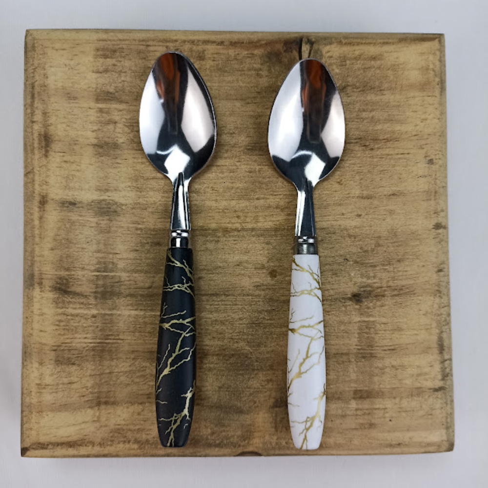

Colher Gourmet Cinza
Uma peça sofisticada feita em mármore cinza natural. Ideal para servir saladas, massas ou compor uma mesa gourmet com estilo.
- Material: Mármore cinza
- Tamanho: 24cm
- Acabamento: Polido com formato ergonômico
- Uso: Culinário e decorativo
- Fácil de limpar e resistente ao calor